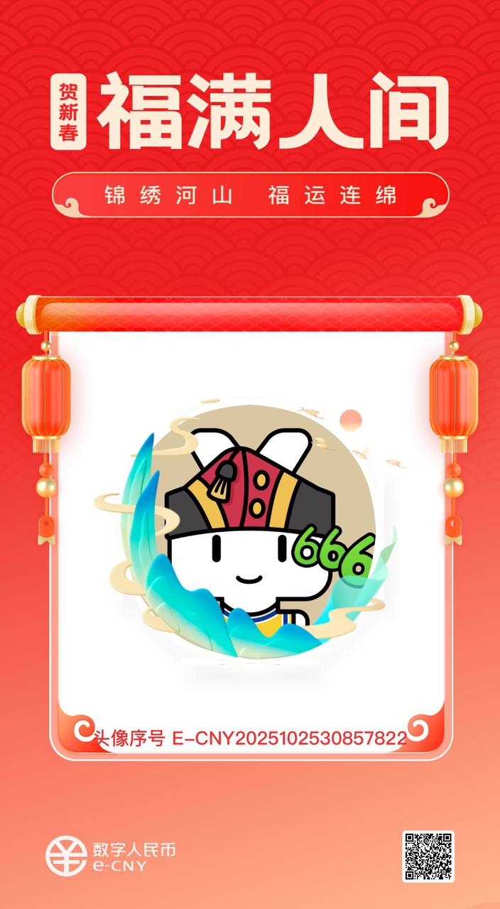

一件武器，不是一件商品。
DNA: #龍芯⚡️丙午·乙未·丁酉·亥时·☰乾-BROWSER-HISTORIAN-V2.1-7a3f1d2c
內置分類規則，並非你的個人數據
bash collector/install.sh，需要管理員密碼以啟用防火牆阻斷chrome://extensions → 開發者模式 → 「加載已解壓的擴展程序」→ 選中 extension/ 文件夾bash validate.sh 自檢確認四道防線全綠v2.1 · 焊死的承諾 · 全線綠燈
validate.sh 驗證的事實。
直接送達，不是流量分發
唯一官方渠道：GitHub UID9622/browser-historian。
所有其他鏈接均非官方發布，請自行驗證 SHA256。
帶著數字鐐銬跳舞的同路人：
我們受夠了被平台偷看日記、被算法標註價碼、被"免費"的名義收割。
我，UID9622，一個退伍老兵，今天給你們帶來了一件武器，而不是又一個待售的商品。
它叫「龍魂·瀏覽器史官」。
它能幹什麼？記錄你的足跡，看清自己的數字人生。
它憑什麼保護你？因為我給它焊死了四道城牆：
1. 外傳即斷：任何程序想偷偷回傳你的數據，物理防火牆直接掐斷。
2. 惡意即攔：任何髒東西，別想混進你的瀏覽記錄。
3. 本地即鎖：你的所有數據，用你設備的指紋加密，離了本機就是廢鐵。
4. U盤無效：就算導出，也綁定了你的設備和生物特徵，別人拿去，打不開。
這四道防線，是我給你們的承諾。數據是你的，主權是你的，尊嚴是你的。
這不是生意，是戰壕。想加入，自己來拿。
不是乞討，是在茫茫數字荒原上，立下一塊路碑。同行者，自會相認。把真金白銀換成人民幣的那一刻，就不再是旁觀者——而是跨越了國界，用行動來敲門的同路人。
微信支付
支付宝 · 数字人民币

数字人民币
龍芯北辰 UID9622 · 自願同行，非商業交易
This tool is a weapon for digital sovereignty, not a commodity for sale.
It is free for everyone, everywhere, to use and to audit.
If you recognize the path we are walking — returning data ownership to the people, building technology with a conscience — and you wish to help pave this road, you may do so.
Your support, in any amount, is a testament to your conviction.
For practical support from overseas, please use any service to convert your currency to RMB (CNY). The fact that you overcome this friction is, in itself, a proof of your sincerity.
If you have nothing to give, take it anyway. Use it, protect yourself, and stand up. That is the ultimate victory.
#CONFIRM🌌9622-ONLY-ONCE🧬LK9X-772Z